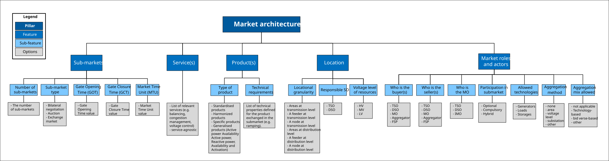
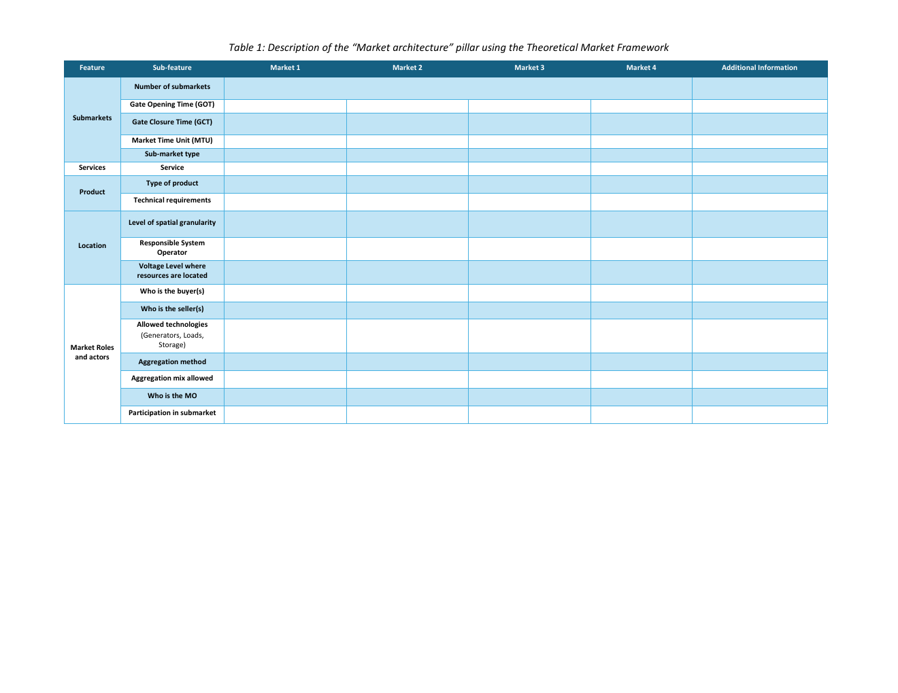

Source-grounded tutorial
How to think about this pillar
Describes the market as interacting sub-markets: what exists, when it operates, what it trades, where it applies, and who participates.
The structure of exchange
Defines the market structure: sub-markets, timing, products, location and actor roles.
Jump to feedbackSource-grounded tutorial
Describes the market as interacting sub-markets: what exists, when it operates, what it trades, where it applies, and who participates.

Market-design intelligence
Start here: these choices define the market objects that the other pillars coordinate, clear, operate, and constrain.
List the sub-markets and record GOT, GCT, MTU and market type.
Separate the system service from the tradable product used to procure it.
Record spatial granularity, responsible SO, voltage level, buyer, seller and market operator.
Use timing, location, product and actor choices to identify barriers to participation or coordination.
Theoretical Market Framework feature map
Use the table as a compact terminology reference and data-entry guide.
| Feature | Sub-feature / decision | Data type | Definition | How to read the choice |
|---|---|---|---|---|
| Sub-markets | Number of sub-markets | Integer | Count of distinct exchange/clearing spaces in the architecture. | Enter number of separate sub-markets. |
| Sub-markets | Gate Opening Time (GOT) | Time / relative time | When the gate for submitting market bids or offers opens. | Record opening point for each sub-market. |
| Sub-markets | Gate Closure Time (GCT) | Time / relative time | When the gate for submitting or updating bids closes. | Use it to compare timing compatibility across markets. |
| Sub-markets | Market Time Unit (MTU) | Duration (e.g. 15 min, 1 h) | Time granularity of the traded market interval/product. | Record interval used by the market. |
| Sub-markets | Sub-market type | Categorical: bilateral / auction / exchange | Market-based arrangement used to acquire flexibility. | Choose clearing/trading arrangement. |
| Service(s) | Service | Categorical / list | System need or action for which flexibility is procured, such as congestion management or voltage control. | State system need, not the traded product. |
| Product(s) | Type of product | Categorical / list | Form of the exchanged product, including availability and/or activation of active or reactive power. | Describe what is actually traded. |
| Product(s) | Technical requirements | Text / list | Technical properties required for the product and service, such as ramping or response capability. | List the relevant technical conditions. |
| Location | Level of spatial granularity | Categorical: area / feeder / node | Spatial resolution at which flexibility is located or procured. | Record both granularity and whether it is at transmission or distribution level. |
| Location | Responsible System Operator | Categorical: TSO / DSO | System operator responsible for the sub-market or system need. | Identify responsible SO. |
| Location | Voltage level where resources are located | Categorical / text | Grid voltage level of eligible resources. | Record relevant voltage class(es). |
| Market roles and actors | Who is the buyer(s) | Actor / role | Actor procuring the service or product. | Identify buyer for each sub-market. |
| Market roles and actors | Who is the seller(s) | Actor / role | Service-providing unit, group or other eligible seller of flexibility. | Identify selling side. |
| Market roles and actors | Allowed technologies | Multi-select: generators / loads / storage | Resource classes eligible to participate. | Select all eligible technology classes. |
| Market roles and actors | Aggregation method | Categorical / text | Rule used to group individual resources, e.g. by area, voltage level or substation. | State how resources may be aggregated. |
| Market roles and actors | Aggregation mix allowed | Categorical / text | Rule defining which resource or bid types may be combined in one aggregation. | State permitted combinations and restrictions. |
| Market roles and actors | Who is the MO | Actor / role | Actor responsible for operating and clearing the sub-market. | Identify market operator. |
| Market roles and actors | Participation in sub-market | Categorical: optional / compulsory / hybrid | Rule defining whether eligible providers choose, must, or partly must participate. | Record participation regime. |
Use one column per market, keep the same Market 1–4 labels across all five pillar tables, and note assumptions or exceptions in Additional Information.

Expert feedback
Can this pillar describe an existing flexibility market unambiguously and guide a new distribution-level market?
Open the discussion to comment here through the project GitHub Q&A thread. Any one of the three feedback actions completes this pillar in the review progress.